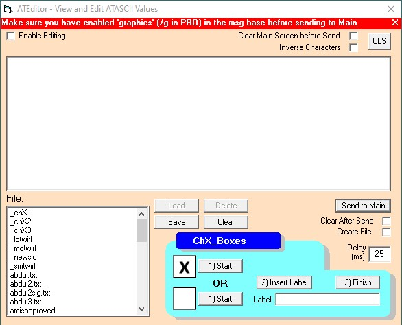
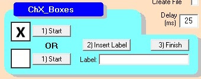

The ATEditor


The ATEditor is a brand new feature for AT_Connect III which can be used to edit sequences of ATASCII characters into macros or 'Mojis* as we like to call them. While offline and not connected to a BBS, you can draw ATASCII images on the main screen and each typed ATASCII keycode will be copied into the ATEditor window, where it can be edited, sent to the main screen for testing, and saved to the 'Mojis folder which is a sub-folder of the 'documents\AT_Connect' system folder. The codes can be sent to the main screen while connected to a BBS with certain constraints.
It is also possible to turn on your capture buffer, capture something from a BBS, and send this captured data to the ATEditor. In other words, Steal a 'Moji...
This editor was born during the troubleshooting phase (which never ends) of AT_Connect III when I was trying to figure out which characters were not being processed correctly by the screen handler. I kept adding things to try to help me do the job better and I realized at some point that this might be a cool feature to have as part of the program...so I further developed it into the ATEditor.
- Enable Editing Checkbox - This box must be checked before any typing can be done in the ATEditor window. Nothing but ATASCII char codes should be typed into this window. All character codes must be separated by a semi-colon.
- Clear Main Screen before send checkbox - sends a clear screen code (125) to the main screen when the 'Send to Screen' button is pressed before the data in the window is sent.
- Inverse Characters checkbox - turns on inverse characters in the main screen until you uncheck the box. The <End> key does the same thing.
- CLS button - Clears both the text window in the ATEditor and the main screen.
- *** Edited *** - Indicates that the contents of the window were edited and changed manually and a save or test might be necessary. (Flashes Green and Red).
- Send to Main button - sends the contents of the window to the main screen in both offline and online modes. The RED warning label seen at the top of the form is displayed on the first push as a reminder to turn on graphics mode in the message editor if sending a message. The second push sends the data.
- 'Clear After Send' checkbox - checking this will clear the ATE after sending the contents to the BBS or main screen.
- 'Create File' checkbox - This will translate the contents of the ATEditor and send it to a new file after prompting for a filename.
- Delay (ms) field - sets a delay between the sending of each character. This is necessary on some BBSes and recommended for most testing. This field can be modified permanently in the Config form and saved as a parameter.
- File Controls - The 'Load', 'Save' and 'Delete' buttons work on the files selected in the Filebox in the bottom left corner. The 'Load' and 'Delete' buttons are disabled until a file is selected in the box. Click on the filebox to select a file. Dbl-clicking the file in the filebox loads the file automatically.
- Clear button - clears the contents of the window. There is no prompt to save the contents so be careful.
- Close button - closes the ATEditor window.
- File: label - indicates the name of the last loaded file.
The ChXbox System
- '1) Start -X-' button - creates a checked chXbox in the ATE.

OR
- '1) Start -_-' button - creates an unchecked chXbox in the ATE.
- '2) Insert Label' button - type your label into the label text box and insert it using the button.
- '3) Finish' button - finishes the chXbox in the ATE after a caption has been added.
- To use the chXbox system, first decide will this be a 'X'ed box or an un'X'ed box...
- Click the 'Start -X-' or 'Start -_-' button depending on the decision in Step 1. This will load the 'Moji 'chX1' (or 'chX2') into the ATE.
- In the Label text box, type in the caption for the button. It can be anything you want (Like, Dislike, What, where or whatever or poop).
- Click the '2) Insert' button below the box to send your caption to the ATE.
- Click the 'Finish -X_-' button to load the 'chX3' 'Moji and finish the chXbox.
- Repeat steps 1-5 for each additional chXbox.
- When you have finished all chXboxes, click 'Send to Main' to send the chXboxes to the BBS. Or you can 'Send to Main' after each ChXbox is built. Both ways work.
Note: The label can also be entered into 'The Box' and the 'Box to ATE' button used to add it to the ATE ChXbox being constructed.
The AutoStart 'Moji
As of ATC v3.20, there is a 'moji that AT_Connect will run at the startup of the system. The filename of this 'moji is "ATC Ready". It is automatically generated at installation time or re-created along with the system 'mojis in the Configuration editor.
Caveats & Conundrums
Certain things must be taken into consideration when sending these 'Mojis to a BBS.
- If you are logged into a BBS that doesn't allow ATASCII graphics characters in the message bases, you might see nothing but garbage on your screen when you hit 'Send to Main'...
- All of the ATASCII BBSes I know of use line editors for their message bases. Some of these line editors only allow 40 characters on a line so if these 'Mojis are too large for the single line (more than 40 characters), they may not fully execute. Sometimes integrating C/Rs (155) into your 'Mojis will solve this to a certain degree or setting your line length to 80 cols.
- If your Moji contains a C/R (155) and the next character is a front slash (/), your 'Moji might kick a BBS:Express BBS system into the message editing menu. Something to think about...
- Some BBSes use a CR on a blank line to launch the message editing mode. Beware of this if your 'Moji has 2 chr(155)s in a row.
- What else?
* 'Mojis - after all... years ago, they were called 'emoticons' which I thought was a perfectly good name for them since it was probably the first name for them but you know how it is... a new generation comes along and decides to rename them to Emojis so they can take credit for inventing them and pat themselves on the back and maybe take home a paycheck. So I decided for the purpose of At_Connect, I will call them 'Mojis and to hell with everything else... where's MY paycheck?
Thanks to Rob S. for getting us started with the 'Mojis.